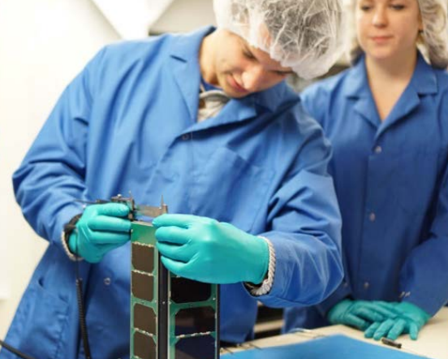
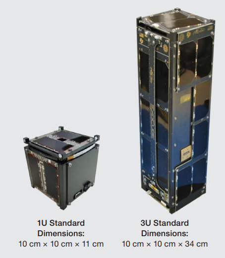
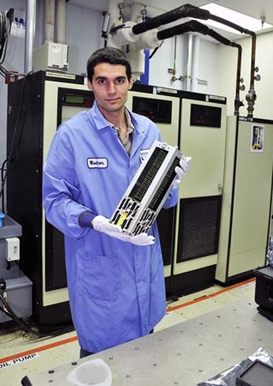
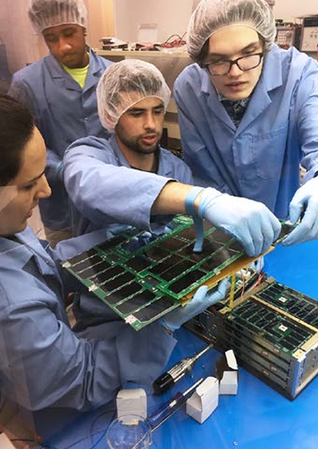

CubeSats began as a collaborative effort in 1999 between Jordi Puig-Suari, a professor at California Polytechnic State University (Cal Poly), and Bob Twiggs, a professor at Stanford University’s Space Systems Development Laboratory (SSDL). The original intent of the project was to provide affordable access to space for the university sci- ence community, and it has successfully done so. Thanks to CubeSats, many major universities now have a space program. But it’s not just big universities; smaller universities, high schools, middle schools, and elementary schools have also been able to start CubeSat programs of their own.

NASA's CubeSat Launch Initiative
CSLI is a NASA initiative that provides opportunities for qualified CubeSats to fly as auxiliary payloads on future launches that have excess capacity or as deployments from the International Space Station (ISS). In very simple terms that means that NASA will cover the cost of providing your CubeSat a ride to space in exchange for a report on the results of your CubeSat investigation.
About half of all CSLI missions are conducting scientific investigations, most frequently Space Weather and Earth Science. Specific science investigation areas include: biological science, study of near Earth objects, climate change, snow/ice coverage, orbital debris, planetary science, space-based astronomy, and heliophysics. Sixty-six percent of all CSLI missions are conducting technology development or demonstrations. Communications, propulsion, navigation and control, and radiation testing lead the topics in this area. Other notable technologies are solar sails, additive manufacturing, femtosatellites, and smart phone satellites. The low cost of development for a CubeSat allows for conducting higher risk activities that would not be possible on large-scale NASA missions.
CubeSat Designation
Let’s explain what the “CubeSat” designation means, compared to other small satellites. A small satellite is generally considered to be any satellite that weighs less than 300 kg (1,100 lb). A CubeSat, however, must conform to specific criteria that control factors such as its shape, size, and weight.
The very specific standards for CubeSats help reduce costs. The standardized aspects of CubeSats make it possible for companies to mass-produce components and offer off-the-shelf parts. As a result, the engineering and development of CubeSats becomes less costly than highly customized small satellites. The standardized shape and size also reduces costs associated with transporting them to, and deploying them into, space.
CubeSats come in several sizes, which are based on the standard CubeSat “unit”—referred to as a 1U. A 1U CubeSat is a 10 cm cube with a mass of approximately 1 to 1.33 kg. In the years since the CubeSat’s inception, larger sizes have become popular, such as the 1.5U, 2U, 3U, 6U, and 12U.
Launch Vehicles
Let’s talk about how the dispenser which contains your CubeSat will get into orbit. CSLI contracts with multiple launch services that allow CubeSats to hitch a ride. When the CubeSat/dispenser package was first dreamed up, the idea was to bolt the dispenser onto the rocket where space was available. That is still how most CubeSats make the journey, although there are now other options available. For example, a CubeSat can be sent with the cargo on a resupply mission to the Space Station. The CubeSat would be taken aboard the Space Station and released into space in a specially designed deployer.

You also may forgo the dispenser altogether, like the Peruvian Chasqui 1 did in 2014. During a spacewalk, a cosmonaut released Chasqui 1 from the Space Station by tossing it by hand into orbit. There’s even a video of this online! FIGURE 6 is a still from that video. Keep in mind that although it has been done, this type of release is extremely uncommon.
Concept Development
Okay, first things first: What do you want your CubeSat to do? As we mentioned in Chapter 1, it is important to choose a mission goal in which the CSLI, that is, NASA, will be interested. You may also consider choosing a concept for which it will be easy to find funding. Many CubeSat missions are designed around the goals of a sponsor who will cover most of the development costs (more on that in Chapter 2.2). For your best chance of being selected by CSLI, check off as many “Keys to CSLI Selection” (see the “Free Advice” inset on the right) as you can. There’s no real time limit to this early concept development phase. Typically, a CubeSat developer will take anywhere from 1 to 6 months to plan the goals and basic details of the CubeSat concept.
By the way, there’s no need to go it alone. Part of this conceptual development time will be spent in search of possible partners and collaborators who may have goals similar to your own. This is called strategic partnering, and may provide you with extra funding or expertise, or both.
Building Up Towards a Launch
Securing Funding
Money is very important. Once your CubeSat is selected and manifested for a flight, CSLI will begin spending NASA dollars on your behalf. If you run out of funds and cannot complete your CubeSat, NASA may not be able to apply completed activities (“sunk costs”) to a replacement CubeSat. If this happens, a launch opportunity will have been lost and it could even cause the demanifest of other CubeSats co-manifested on the same launch. Additionally, the Cooperative Research and Development Agreement (CRADA) that you sign with NASA after being manifested requires you to reimburse NASA for any integration and launch costs incurred if you don’t deliver your CubeSat on time. This hasn’t happened to anyone yet, but it could! Therefore, do not accept a launch opportunity until you are confident you can deliver your CubeSat on time. As part of your proposal to CSLI, you will need to provide enough budgetary information to prove that you’ve secured enough funding to get you across the finish line.
Designing a CubeSat around a specific mission you came up with on your own may be your dream, but it may be difficult to find funding. There are, however, requests for proposals (RFPs) sent out every year from organizations looking for people who can help them perform missions that would be perfect for a CubeSat. The National Science Foundation has funded a number of CubeSats in the past, as has NASA’s Earth Science Technology Office (ESTO). A simple Internet search could help you find similar organizations looking for a great team to help them out. These organizations would work with your team and cover some or all of the development costs. For university students interested in starting a CubeSat project, another option is to inquire with faculty and administrators at your col lege or university. Someone there may think that funding your project would be an impressive feather in the university’s cap. In addition, every state has a NASA Space Grant Consortium, which provides resources in support of students pur suing careers in science, technology, engineering, and mathematics, or STEM.
Merit and Feasibility Reviews
As part of your proposal to CSLI, your team will be required to perform a merit review and a feasibility review. These reviews help assure mission stakeholders (and everyone else involved in the mission, i.e. CSLI, the launch vehicle provider, other sponsors, etc.) that your team or organization is capable of fulfilling your obligations and completing a successful and worthwhile mission. Your team will organize these reviews, and you will choose the reviewers. And to make sure everything is on the up-and-up, the review panel must be made up of individ uals who are not on the project team. For the merit review, choose reviewers who have knowledge/experience with your focus area (science, technology and/ or education) and that can assess why a flight opportunity is required. For the feasibility review, choose reviewers ideally with knowledge of space flight and spacecraft, but otherwise knowledgeable in various areas of hardware and project development and that can assess your team’s ability to deliver your spacecraft on time and on budget. If your focus area includes science or technology, be sure to include someone knowledgeable on that specific area. Keep in mind that you are not just trying to check a box; you want honest, valuable, and useful feedback to your objectives and design, so that you can improve your chances of a successful proposal and successful mission.
Merit Review
Before submitting your proposal to CSLI, your CubeSat’s intended mission must pass an intrinsic merit review. This review will assess the goals and objectives of the mission to determine the quality of its investigation in regard to science, education, and/or technology. It will also determine if the overall investigation supports one or more of the science, education, technology, and/or operations goals or objectives of the NASA Strategic Plan. The more closely your mission aligns with a goal or objective of the NASA Strategic Plan, the more likely it is that your CubeSat will be selected
Feasibility Review
In addition to the merit review, your team must also complete and pass a feasibility review prior to submitting the proposal. This review will judge whether your CubeSat’s mission is achievable with regard to “technical implementation,” including feasibility, resiliency, risk, and the probability of success. Bottom line: Is this mission even possible, and can your team get it done?
CubeSat Design
You will probably begin your design process with a lot of research. CubeSats have been around for a while now, and there are plenty of developers who have already made mistakes from which you can learn. Most of these developers are also very open and eager to share their successes and failures with others. There is plenty of material published online that may prove useful to you. We would also recommend attending one of the many annual conferences where you can meet and chat with members of the CubeSat community. A problem that may seem impossible to you might be old hat to someone who’s been working in this field for a while
You will also need to research which components will work best for your CubeSat system. Luckily for you, CubeSats have become increasingly popular, and the availability of commercial off-the-shelf parts has vastly increased. Although most popular components can now be purchased through commercial vendors, many educational organizations still try to build and design as many components as possible in-house in order to enhance the educational experience, as well as to keep costs low. Because new companies are entering the marketplace every year, we can’t give you a complete list of CubeSat component vendors, but an Internet search will reveal a number of useful suppliers. A list of companies that supply CubeSat components can also be found at http://www.cubesat.org on the Developer Resources page. The list on this page is updated regularly, but it isn’t meant to be a complete list of every vendor on the market.<.p>